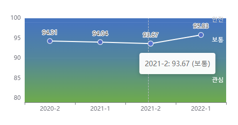
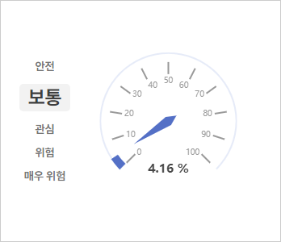
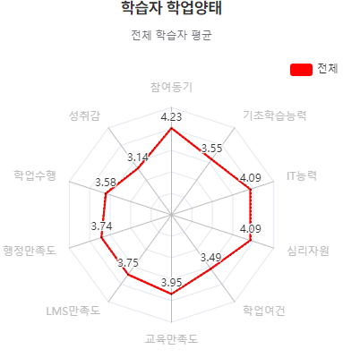
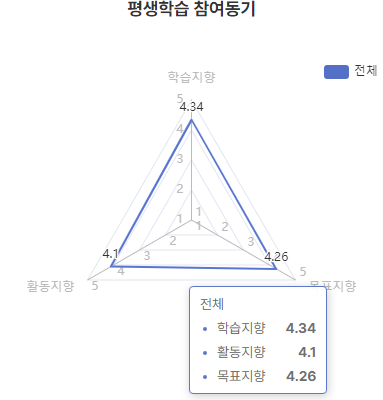
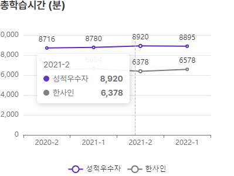
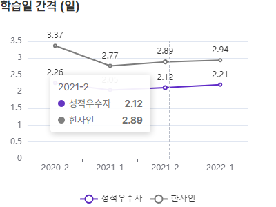
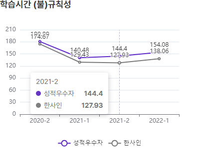
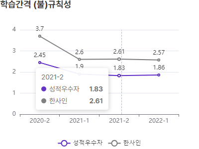
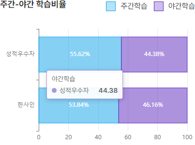
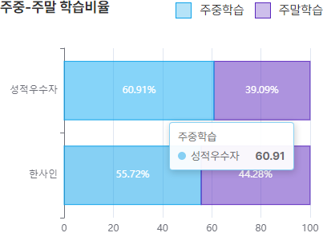

학습분석정보는 학습자에게 우선 필요한 지도와 지원이 무엇인지를 파악하는 데 도움이 되고자, 학습자의 다양한 데이터와 조사자료를 분석하여 준비된 자료입니다. 학습자를 특정한 상태로 진단하거나 확인해주는 정보가 아닙니다. 맞춤형 지원을 위해 참고자료로 활용해 주시기 바랍니다. (사용자 활용 의견 수집 후 모델 개선 및 고도화 예정)
학업성공지수

학업성공지수는 학습자가 해당 학기에 학업을 중단하지 않고 지속할 가능성을 백분율로 제공해주는 정보입니다. 최근 5년(10개 학기)의 학습데이터를 바탕으로 한양사이버대학교에서 학업을 중단한 학습자들의 특성을 분석하여 산출되었습니다. 분석을 위해서 학습자의 연령대-성별 등 기본 정보, 휴복학 등 학적 정보, 성적 등 학사 정보, LMS 로그기록 등 학습활동 정보 등을 활용하였습니다.
학업중단위험 등급

학업중단위험 등급은 학습자가 해당 학기에 학업을 중단할 위험을 표시해주는 정보입니다. 학업중단의 위험에 따라 5등급으로 구분됩니다.
“매우위험 > 위험 > 관심 > 보통 > 안전”의 다섯 단계로 분류되며, 위험도가 가장 급격하게 변하는 구간에 있는 학습자들이 ‘위험’ 등급, 위험도가 대략 평균 중단율 이하에 있는 학습자들은 ‘보통’ 등급으로 표시됩니다.
위험등급
위험확률
매우위험
75% 이상
위험
25~75%
관심
10~25%
보통
1~10%
안전
1% 미만
학습패턴 분석

학습자 학업양태는 학습자의 학업과정에서 ‘우선’ 지원이 필요한 영역을 판단하기 위하여 참고할 수 있는 정보를 제공합니다. 이 정보값은 학업양태의 각 항목에 대하여 개별 학습자의 상태를 직접 진단-측정하여 제시하는 것은 아닙니다. 그래프는 다양한 학습자 데이터 분석에 기반하여 해당 학습자에게 ‘우선’ 지원이 필요할 것으로 여겨지는 영역을 표시해줍니다. 각 학업양태 영역 가운데 정보값이 가장 낮은 영역, 혹은 평균에 비해 낮은 영역부터 우선 지원을 고려하실 수 있습니다.
학업양태는 학업과정의 순서에 따라 “평생학습 참여동기, 기초학습능력, IT능력, 심리자원, 학업여건, 교육만족도, LMS만족도, 행정만족도, 학업수행, 성취감” 10개의 항목으로 구성되어 있습니다. 정보값 산출을 위해 2019년부터 매년 실시해 온 “학습자 학업실태조사” 결과의 누적 자료와 연령대, 성별, 전공계열, LMS 학습패턴 등 다양한 학습자 데이터를 활용하였습니다.

평생학습 참여동기는 학습자의 평생학습 참여동기를 학습지향, 목표지향, 활동지향으로 나누어 표시하여 줍니다. 학습지향은 지식과 학습 그 자체를 지향하며 학업에 참여하고자 하는 정도, 목표지향은 사회적 목표를 달성하기 위하여 필요한 기술과 전문성을 추구하며 학업에 참여하는 정도, 활동지향은 학업과 함께 이루어지는 인간관계와 사회적 상호작용의 증진을 추구하는 정도를 가리킵니다. 기간의 학업실태조사 결과와 다양한 학습자 데이터를 분석하여 각 정보값을 제시하고 있습니다.

총학습시간은 학습자가 LMS를 통해 강의 콘텐츠를 수강한 시간을 기준으로 한 학기의 전체 학습시간을 (분)으로 표시하고 있습니다. 해당 학습자의 총학습시간을 한양사이버대 전체 학습자의 평균 및 직전학기 평균평점 4.0 이상의 성적 우수학습자의 평균과 비교하여 표시하고 있습니다. 일반적으로 학습시간이 길수록 성적이 높은
것으로 나타나고 있습니다. (본 학습분석정보는 향후 “수강신청 학점당 학습시간”으로 변경될 예정입니다.)

학습일 간격은 학습자가 며칠에 한번씩 LMS를 통해 강의 콘텐츠를 수강했는지를 표시하고 있습니다. 한양사이버대 전체 학습자의 평균값 및 성적 우수학습자의 평균값과 비교하여 표시하고 있습니다. 일반적으로 더 자주, 즉 더 짧은 간격으로 강의 콘텐츠를 학습하는 학습자가 성적이 더 우수한 것으로 나타나고 있습니다.

학습시간 규칙성은 학습자가 한학기 동안 하루에 학습하는 시간이 얼마나 일정한지의 정도를 하루 학습시간(분)의 표준편차를 통해서 표시하고 있습니다. 숫자가 클수록 학습시간이 불규칙한 것이며, 숫자가 작을수록 학습자가 하루에 일정한 시간을 규칙적으로 학습하고 있음을 표시합니다. 한양사이버대 전체 학습자의 평균값 및 성적 우수학습자의 평균값과 비교하여 표시하고 있습니다. 성적과 밀접한 상관관계는 나타나지 않으나, 일반적으로 하루 학습시간이 불규칙적일수록(숫자가 클수록) 학업중단위험이 큰 것으로 나타나고 있습니다.

학습간격 규칙성은 학습자의 학습일 간격이 얼마나 규칙적인지를 학습일 간격의 표준편차(일)를 통해 표시하고 있습니다. 숫자가 클수록 특정한 시기에 몰아서 학습하는 등 학습일 간격이 불규칙적인 것이며, 숫자가 작을수록 학습자는 일정한 간격으로 규칙적으로 공부하는 것입니다. 한양사이버대 전체 학습자의 평균값 및 성적 우수학습자의 평균값과 비교하여 표시하고 있습니다. 일반적으로 더규칙적인 간격으로 강의 콘텐츠를 학습하는 학습자가 성적이 더 우수한 것으로 나타나고 있습니다.

주간-야간 학습비율은 학습자가 주간에 학습한 시간과 야간에 학습한 시간의 비율을 각각 백분율로 표시하고 있습니다. ‘주간’이라 함은 일반적인 직장인의 근무시간을 참고하여 오전 8시부터 오후 6시까지로 설정하였으며, 그 이외의 시간은 ‘야간’으로 산정하였습니다. 밀접한 상관관계는 나타나지 않지만, 성적 우수자의 주간 학습비율이 약간 높은 것으로 나타나고 있습니다.

주중-주말 학습비율은 학습자가 월요일부터 금요일까지의 주중에 학습하는 시간의 비율과 토요일, 일요일의 주말에 학습하는 시간의 비율을 각각 백분율로 표시하고 있습니다. 학습시간 데이터에 따르면 매학기 성적 우수자 집단의 주중 학습시간 비율이 높은 것으로 나타나고 있습니다.
학습분석정보 해설자료 (학습자 용)
학습분석정보
학습분석정보는 학습자가 자신의 학습패턴을 점검하고 더 나은 학습습관으로 성공적인 평생학습을 달성하는 데 도움을 주고자 준
비하였습니다.
일반적으로 성적이 우수한 학습자들은 총학습시간이 길고, 학습일 간격이 짧은 것으로 나타나고 있습니다. 또한 학습을 성공적으로
지속하는 학생들이 학습시간이 더 규칙적이며, 학습일 간격도 규칙적인 학생들이 성적도 더 우수한 것으로 나타나고 있습니다.
학업성공지수
학업성공지수는 학습자가 해당 학기에 학업을 성공적으로 지속할
가능성을 백분율로 제공해주는 정보입니다. 이 정보는
한양사이버대학교에서 학업을 성공적으로 지속한 학습자들의 특성을
통계적으로 분석하여 산출되었습니다. 정보 산출을 위해 최근
5년(10개 학기) 동안 학업을 성공적으로 지속한 학습자들의
학습시간, 학습간격, 학적변동 등의 통계적 자료가 사용되었습니다.
학습패턴 분석
총학습시간은 학습자가 LMS를 통해 강의 콘텐츠를 수강한 시간을 기준으로 한 학기의 전체 학습시간을 (분)으로 표시하고 있습니다. 해당 학습자의 총학습시간을 한양사이버대 전체 학습자의 평균 및 직전학기 평균평점 4.0 이상의 성적 우수학습자의 평균과 비교하여 표시하고 있습니다. 일반적으로 학습시간이 길수록 성적이 높은
것으로 나타나고 있습니다. (본 학습분석정보는 향후 “수강신청 학점당 학습시간”으로 변경될 예정입니다.)
학습일 간격은 학습자가 며칠에 한번씩 LMS를 통해 강의 콘텐츠를 수강했는지를 표시하고 있습니다. 한양사이버대 전체 학습자의 평균값 및 성적 우수학습자의 평균값과 비교하여 표시하고 있습니다. 일반적으로 더 자주, 즉 더 짧은 간격으로 강의 콘텐츠를 학습하는 학습자가 성적이 더 우수한 것으로 나타나고 있습니다.
학습시간 규칙성은 학습자가 한학기 동안 하루에 학습하는 시간이 얼마나 일정한지의 정도를 하루 학습시간(분)의 표준편차를 통해서 표시하고 있습니다. 숫자가 클수록 학습시간이 불규칙한 것이며, 숫자가 작을수록 학습자가 하루에 일정한 시간을 규칙적으로 학습하고 있음을 표시합니다. 한양사이버대 전체 학습자의 평균값 및 성적 우수학습자의 평균값과 비교하여 표시하고 있습니다. 성적과 밀접한 상관관계는 나타나지 않으나, 일반적으로 하루 학습시간이 불규칙적일수록(숫자가 클수록) 학업중단위험이 큰 것으로 나타나고 있습니다.
학습간격 규칙성은 학습자의 학습일 간격이 얼마나 규칙적인지를 학습일 간격의 표준편차(일)를 통해 표시하고 있습니다. 숫자가 클수록 특정한 시기에 몰아서 학습하는 등 학습일 간격이 불규칙적인 것이며, 숫자가 작을수록 학습자는 일정한 간격으로 규칙적으로 공부하는 것입니다. 한양사이버대 전체 학습자의 평균값 및 성적 우수학습자의 평균값과 비교하여 표시하고 있습니다. 일반적으로 더규칙적인 간격으로 강의 콘텐츠를 학습하는 학습자가 성적이 더 우수한 것으로 나타나고 있습니다.
주간-야간 학습비율은 학습자가 주간에 학습한 시간과 야간에 학습한 시간의 비율을 각각 백분율로 표시하고 있습니다. ‘주간’이라 함은 일반적인 직장인의 근무시간을 참고하여 오전 8시부터 오후 6시까지로 설정하였으며, 그 이외의 시간은 ‘야간’으로 산정하였습니다. 밀접한 상관관계는 나타나지 않지만, 성적 우수자의 주간 학습비율이 약간 높은 것으로 나타나고 있습니다.
주중-주말 학습비율은 학습자가 월요일부터 금요일까지의 주중에 학습하는 시간의 비율과 토요일, 일요일의 주말에 학습하는 시간의 비율을 각각 백분율로 표시하고 있습니다. 학습시간 데이터에 따르면 매학기 성적 우수자 집단의 주중 학습시간 비율이 높은 것으로 나타나고 있습니다.